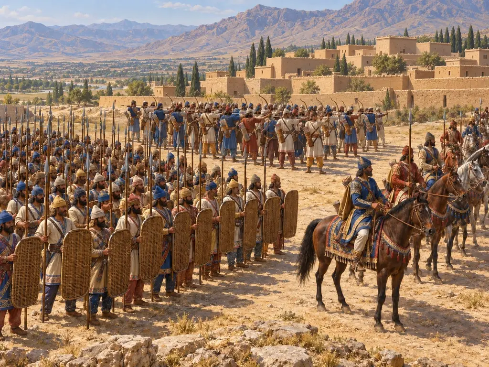
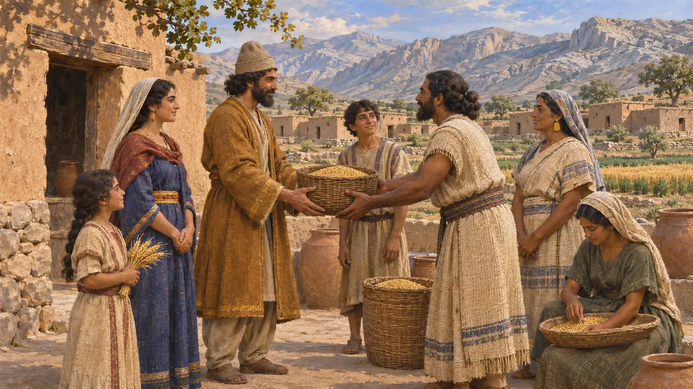
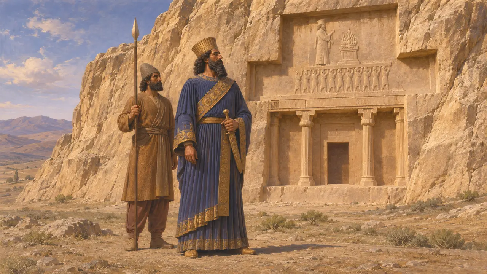
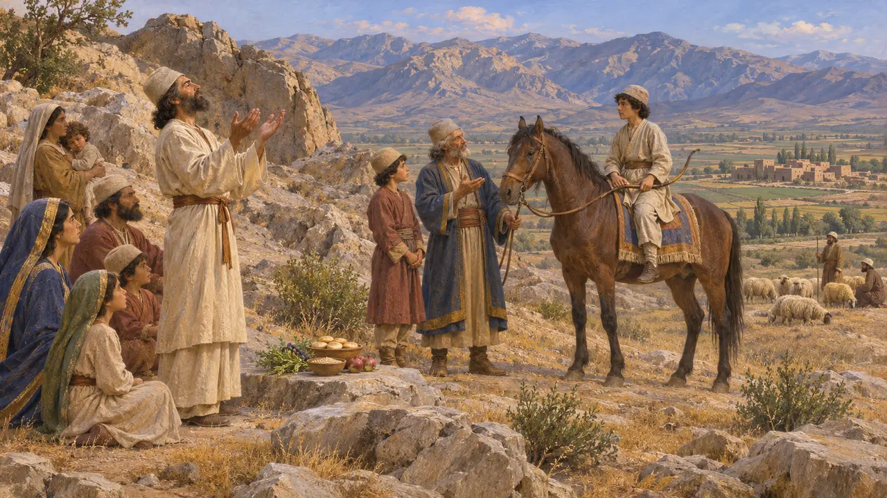
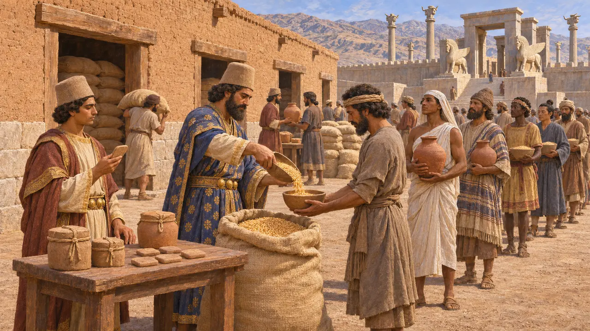
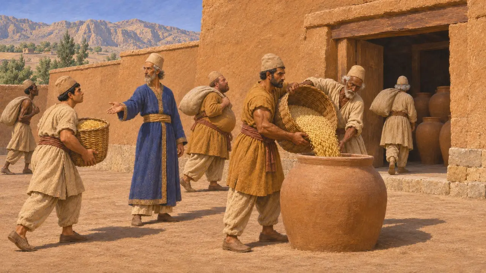
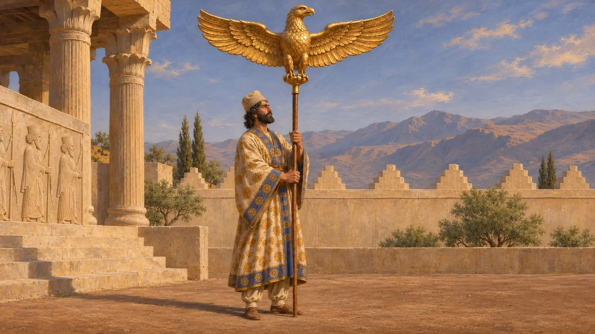

ペルシア人
アケメネス朝の支配民族。ペルシス(パールサ)出身、紀元前559〜479年
ゲームでは： レベル1：建国者の墓、レベル2：槍持ち、レベル3：偽り、レベル4：基壇、レベル5：勅許状、レベル6：舟橋、レベル7：サルディス炎上、レベル8：マラトン湾、レベル9：運河、レベル10：熱き門、レベル11：終幕
ペルシア人はペルシスに住むイラン系言語の民である。ペルシスはイラン高原南西部の高地で、彼ら自身はパールサと呼び、現在のファールス州にあたる。キュロスとその後継者たちのもとで、彼らはアンシャンを中心とする一地方王国から、エーゲ海からインダス川に至る地を支配するまでになった。ダレイオスとクセルクセスは碑文で自らをペルシア人と称し、ペルシアを諸邦の筆頭に置いた。
ゲームでは： 本作ではペルシア人を、ペルシスすなわちパールサに住む王自身の民として描いており、これは王碑文と一致する。史実では、彼らはその故地をエラム人や、多くの従属民から集められた労働者たちと分かち合っていた。

ペルシア人はどこから来たか
係争中イラン語を話す集団は、おそらく紀元前1千年紀初頭までに、アンシャン周辺の古くからのエラム系住民のあいだに混じってファールスの高地に定住していた。多くの歴史家は、ペルシア人のアイデンティティがこの長い混淆から生まれたと論じており、それはペルシスが行政の書き言葉としてエラム語を保ち続けた理由の説明にもなる。キュロスの円筒碑文は彼の祖先をテイスペスの子孫たるアンシャンの王たちと呼び、アカイメネスの名には一度も触れない。そのため、キュロスとダレイオスが同じ家系であったかどうかも議論の的となっている。
Cyrus Cylinder; W. Henkelman, The Other Gods Who Are, 2008

ペルシア人にして、ペルシア人の子
同時代の記録ベヒストゥンにおいてダレイオスは、自らの血統をヒュスタスペスを経てアカイメネスまで遡り、それゆえに自らの家はアケメネス家と呼ばれるのだと述べた。彼は支配する国々の一覧の筆頭にペルシアを置いた。ナクシェ・ロスタムの墓では、自らをペルシア人の子なるペルシア人、アーリヤの血を引くアーリヤ人と称し、ペルシア人の槍は故郷を遠く離れて及んだと語っている。
DB §1-4, §6; DNa

ヘロドトスが伝えるペルシアの風習
古代の記述ヘロドトスによれば、ペルシア人は部族に分かれており、最も高貴なのはパサルガダエ族で、その氏族であるアケメネス家から王が出た。他の部族は農耕民や牧畜民であった。少年たちは5歳から20歳まで、馬に乗ること、弓を射ること、真実を語ることの3つを教えられたという。さらに彼らは神像も神殿も持たずに高所で犠牲を捧げ、その場には必ずマギが立ち会ったと記している。
Herodotus 1.125, 1.131-132, 1.136

ペルセポリス文書に見るペルシア人
同時代の記録ペルセポリスから出土した数千枚の粘土板は、その大半がエラム語で書かれ、紀元前509〜493年頃のものとされ、ペルシスの統治の実態を記録している。そこには役人や旅人、労働者に支給された穀物・葡萄酒・ビールの配給が記されており、労働者の多くはクルタシュと呼ばれる異国の働き手であった。また、アフラマズダや、フンバンなどのエラムの神々、さらには山や川への供物も記録されており、本国における宗教生活が混交したものであったことがうかがえる。
Persepolis Fortification tablets; W. Henkelman, The Other Gods Who Are, 2008

貢納の免除
係争中ヘロドトスによれば、王の領土のうちペルシスだけは貢納を納めなかったという。しかし城砦文書には、ペルシス全域で産物が王の倉に集められ、労働力が組織されていた様子が記されている。ヘロドトスが言ったのはサトラップ領に課された銀の貢納だけで、ペルシア人もなお物資と労役の義務を負っていたのか、それとも彼は王自身の民を理想化して描いたのか、歴史家の間で議論が続いている。
Herodotus 3.97; P. Briant, From Cyrus to Alexander, 2002

名前の横の紋章
古代の記述ペルシア人の布の旗は一つも残っておらず、記述もない。クセノポンは王の軍旗を、槍の上で翼を広げた金の鷲だったと述べており、本作の紋章はそれに従い、縁にペルセポリスの階段状の狭間を配している。ギリシアの著述家がこの鷲を見たのは前4世紀であり、一世紀前のダレイオスの軍が掲げていたものを示しているとは限らない。
Xenophon, Anabasis 1.10.12; Xenophon, Cyropaedia 7.1.4
出典
- Herodotus, Histories 1.125-136, 3.97
- Darius I, Behistun inscription (DB) and Naqsh-e Rostam inscription (DNa)
- Cyrus Cylinder
- Persepolis Fortification tablets
- W. Henkelman, The Other Gods Who Are, 2008
- P. Briant, From Cyrus to Alexander, 2002